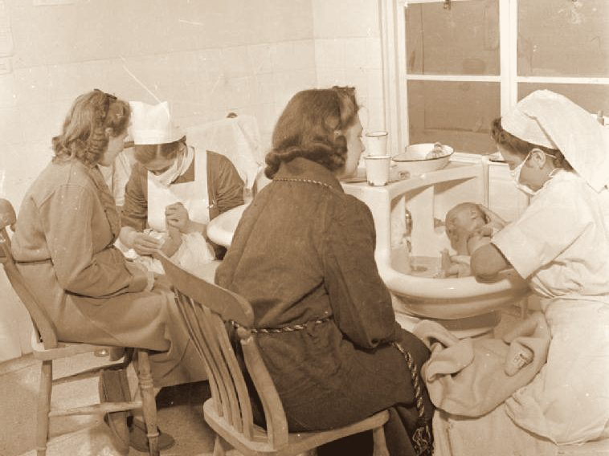
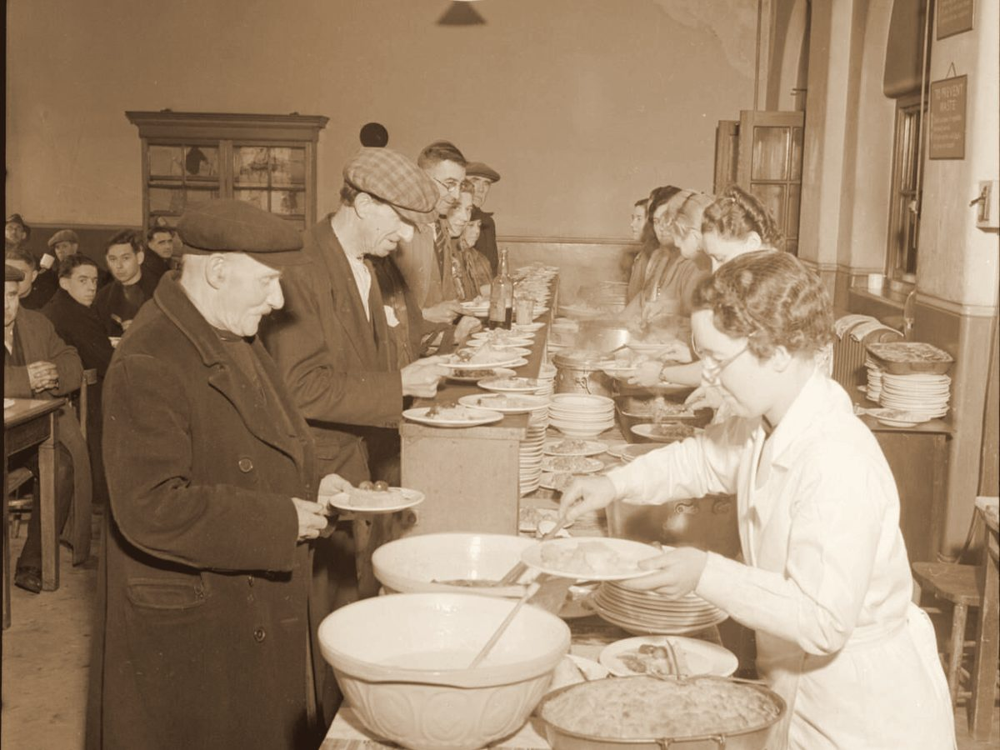

English · Bac pro ASSP · Première ST2S · My Working Day · Women at Work
Women at Work in Post-War London
Call the Midwife. Nurses and midwives in Poplar, from the Blitz to the NHS.
L’élève ne peut pas venir en classe ou est hospitalisé
A dedicated path for the student who cannot come to class has not been written for this sequence yet. Until it is, the student can follow the timeline, the eight lessons and the public extracts on this page. The teacher notes stay in Version prof.
British health system · NHS · Bac pro ASSP · Première ST2SSystème de santé britannique · NHS · Bac pro ASSP · Première ST2S
Call the Midwife
Read Call the Midwife through short public extracts, not full seasons. The main focus is the NHS and British care after 1948; the dossiers start in 1945 so that the East End and the founding of the NHS make sense.Lire Call the Midwife par de courts extraits publics, pas par des saisons entières. Le fil conducteur est le NHS et les soins britanniques après 1948 ; les dossiers partent de 1945 pour comprendre l’East End et la fondation du NHS.
Bac pro ASSPPremière ST2S
Bac pro ASSP
English for Bac pro ASSP (Accompagnement, soins et services à la personne): care vocabulary, communication with people and families, and how a health service is organised (Blocs 1, 3, 4 and Langue vivante A).Anglais pour le Bac pro ASSP : vocabulaire du soin, communication avec les personnes et les familles, et organisation d’un service de santé (Blocs 1, 3, 4 et Langue vivante A).
Première ST2S
Première ST2S only (not Terminale): LVA in the technological pathway and STSS work on protection sociale and health systems. Tasks stay at Première level.Première ST2S uniquement (pas la Terminale) : LVA de la voie technologique et STSS sur la protection sociale et les systèmes de santé. Tâches calibrées première.
Before you start: 1942 to 1945 to 1948Avant de commencer : 1942 to 1945 to 1948
Three dates explain why the midwives of Poplar can visit every mother through the NHS.Trois dates expliquent pourquoi les sages-femmes de Poplar peuvent soigner toutes les mères grâce au NHS.
📜 What is the Beveridge Report? It was a government report written in 1942, during the Second World War, by the economist William Beveridge. It proposed social insurance for everyone: every worker pays a small weekly contribution, and in return everyone gets help “from the cradle to the grave” (from birth to death), with health care for all, to defeat five giants: Want, Disease, Ignorance, Squalor and Idleness. Its result: the welfare state and the NHS, which began on 5 July 1948.Qu'est-ce que le rapport Beveridge ? Un rapport officiel écrit en 1942, pendant la Seconde Guerre mondiale, par l'économiste William Beveridge. Il propose une assurance sociale pour tous : chaque travailleur verse une petite cotisation chaque semaine et, en échange, chacun est aidé « du berceau à la tombe » (de la naissance à la mort), avec des soins pour tous, pour vaincre cinq géants : la misère, la maladie, l'ignorance, le logement insalubre et le chômage. Résultat : l'État-providence et le NHS, lancé le 5 juillet 1948.
Two layers, not stuck togetherDeux couches, à ne pas coller
Brick: history without the series. Ink: what fiction or an extract puts at the centre. Always check the year on screen.Brique: l'histoire sans la série. Encre: ce que la fiction ou un extrait met au centre. Toujours vérifier l'année à l'écran.
1942 · ContextContexte · Beveridge Report
1945 · ContextContexte · Attlee, Labour
1948 · ContextContexte · NHS begins
1957 · Fiction startsDébut de la fiction · Jenny / Nonnatus House
1959-1961 · Classroom themesThèmes de classe · Team, public health, housing, standards, thalidomide
1961-11 · ContextContexte · Thalidomide withdrawn in the UK
1967 · ContextContexte · Abortion Act
Learning JourneySéquence
Eight lessons, one public extract eachHuit séances, un extrait public chacune
Watch the short clip, keep the English of care, then say what has changed in society. Clips may come from different series years: always check the year on screen.Regarder le court extrait, garder l'anglais du soin, puis dire ce qui a changé dans la société. Les extraits peuvent venir d'années différentes: toujours vérifier l'année à l'écran.
SocietySociété.1959. The welfare state is in place, but Poplar housing and home births still shape the work.1959. L'Etat-providence est la, mais le logement a Poplar et les naissances a domicile faconnent encore le travail.
ThemeTheme.The team moves house. The job continues in a changing East End.L'equipe demenage. Le metier continue dans un East End qui change.
ExtractExtrait. Official BBC trailer: Poplar and Nonnatus House
Official BBC trailer used as a short overview of Poplar and Nonnatus House (the S3E1 watch link was Non disponible).Bande-annonce BBC utilisée comme aperçu court de Poplar et Nonnatus House (le lien S3E1 était Non disponible).
After the extract.Après l'extrait. Name the year on screen. One fact about Poplar in 1959. One limit: the series is fiction, not proof.
02
A new sister on the team
BBC
1959 · theme lesson · Series clip
SocietySociété.Staff shortages and training: the NHS needs hands, not only certificates.Manque de personnel et formation: le NHS a besoin de bras, pas seulement de diplomes.
ThemeTheme.A new colleague learns the district. Trust comes before titles.Une nouvelle collegue decouvre le quartier. La confiance vient avant les titres.
ExtractExtrait. Chummy arrives at Nonnatus House (BBC clip)
Public extract (BBC). Short clip, not a full episode. If blocked in class, the teacher may use a purchased season optionally.Extrait public open (BBC). Court extrait, pas un épisode entier. Si bloqué en classe, l'enseignant peut utiliser une saison achetée en option.
After the extract.Après l'extrait. What must a new midwife learn beyond book-learning? Give two expressions you could use with a colleague.
03
Public health on the street
Mr&Mrs HISTORY
1959 · theme lesson · Documentary
SocietySociété.Post-war public health reaches families through district nurses and midwives.La sante publique d'apres-guerre atteint les familles par les infirmieres et sages-femmes de secteur.
ThemeTheme.Prevention leaves the clinic: vaccination, information, trust in the home.La prevention sort de la clinique: vaccination, information, confiance a domicile.
ExtractExtrait. Documentary: giving birth in the East End, 1955
Not an episode of the series. Historical context for public health and maternity in the East End.Pas un épisode de la série. Contexte historique pour la santé publique et la maternité dans l'East End.
After the extract.Après l'extrait. Why does prevention need clear English in the home? One dated fact, one limit of the series.
04
Barbara arrives in 1960
PBS
1960 · theme lesson · Series clip
SocietySociété.1960: the East End stands between old housing and promised estates.1960: l'East End est entre les anciens logements et les cites promises.
ThemeTheme.A new decade, a new midwife. First impressions are not the whole person.Une nouvelle decennie, une nouvelle sage-femme. La premiere impression n'est pas toute la personne.
ExtractExtrait. Nurse Corrigan's first day (PBS clip)
Later series, same classroom theme: a new midwife's first day.Série plus tardive, même thème de classe: le premier jour d'une nouvelle sage-femme.
After the extract.Après l'extrait. What changes between 1959 and 1960 in the street and in the job? Three expressions for a first day.
05
Housing is a form of care
PBS
1960 · theme lesson · Behind the scenes
SocietySociété.Slum clearance and new estates: progress on paper, hard lives on the ground.Resorption de l'habitat insalubre et nouvelles cites: progres sur le papier, vies dures sur le terrain.
ThemeTheme.Damp rooms and crowded homes shape health. Observe without humiliating.Pieces humides et logements surpeuples faconnent la sante. Observer sans humilier.
ExtractExtrait. Poplar East End in 1963 (PBS behind the scenes)
Public extract (PBS). Short clip, not a full episode. If blocked in class, the teacher may use a purchased season optionally.Extrait public open (PBS). Court extrait, pas un épisode entier. Si bloqué en classe, l'enseignant peut utiliser une saison achetée en option.
After the extract.Après l'extrait. Explain why a midwife must notice housing. One fact from 1960, one limit of fiction.
06
Standards on the district
BBC
1960 · theme lesson · Series clip
SocietySociété.Records and standards travel between home and hospital.Dossiers et normes circulent entre le domicile et l'hopital.
ThemeTheme.Notes, hygiene, firm kindness. Professional English at the bedside.Notes, hygiene, fermete bienveillante. L'anglais professionnel au chevet.
Public extract (BBC). Short clip, not a full episode. If blocked in class, the teacher may use a purchased season optionally.Extrait public open (BBC). Court extrait, pas un épisode entier. Si bloqué en classe, l'enseignant peut utiliser une saison achetée en option.
After the extract.Après l'extrait. Why do notes matter in 1960? Give three bedside lines that protect consent.
07
A baby born with a deformity
Call the Midwife Official Video ChannelHandle with care
1961 · theme lesson · Series clip
SocietySociété.1961: the start of the thalidomide years on screen. Drug safety and family support.1961: le debut des annees thalidomide a l'ecran. Securite des medicaments et soutien aux familles.
ThemeTheme.Care and dignity when medicine cannot yet explain. No invented diagnosis.Soin et dignite quand la medecine ne peut pas encore expliquer. Pas de diagnostic invente.
ExtractExtrait. Thalidomide (Call the Midwife Official Video Channel)
Public extract (Call the Midwife Official Video Channel). Short clip, not a full episode. If blocked in class, the teacher may use a purchased season optionally.Extrait public open (Call the Midwife Official Video Channel). Court extrait, pas un épisode entier. Si bloqué en classe, l'enseignant peut utiliser une saison achetée en option.
The baby has been born. Mother and child are my patients.
I can't explain the cause yet.
We'll look after the baby, and we'll look after you.
This was present from birth. It is congenital.
One word is missingIl manque un mot
This was present from birth. It is ______.
After the extract.Après l'extrait. Separate clinical facts from blame. Three careful words. One limit: fiction is not a medical archive.
08
When medicine can harm
PBS
1961 · theme lesson · Behind the scenes
SocietySociété.Drug regulation, disability, and dignity: society must catch up with the clinic.Regulation des medicaments, handicap et dignite: la societe doit rattraper la clinique.
ThemeTheme.Thalidomide is withdrawn. Trust, truth-telling, and the midwife's role beside the family.Le thalidomide est retire. Confiance, verite, et role de la sage-femme aupres de la famille.
ExtractExtrait. How 1962 changes Poplar (PBS behind the scenes)
Public extract (PBS). Short clip, not a full episode. If blocked in class, the teacher may use a purchased season optionally.Extrait public open (PBS). Court extrait, pas un épisode entier. Si bloqué en classe, l'enseignant peut utiliser une saison achetée en option.
Words of care and of societyMots du soin et de la société
No browser voice. Reading aid only. Kokoro can be added later if needed.Pas de voix navigateur. Aide à la lecture seulement. Kokoro pourra être ajouté plus tard si besoin.
midwife · sage-femme MID-wife
district · secteur / quartier DIS-trikt
welfare state · État-providence WEL-fair stayt
at no charge at the point of use · open au moment des soins
congenital · congénital kun-JEN-i-tl
withdrawn · retiré (médicament)
housing estate · cité / ensemble de logements
notes · dossier / observations
Lesson 09 · Final debateLesson 09 · Débat final
Can the NHS still keep Bevan’s promise today?Le NHS peut-il encore tenir la promesse de Bevan aujourd'hui ?
From 1948 to today: why is it now so hard to get a GP appointment, even in London? Read the facts, choose a side, debate, then write your opinion.De 1948 à aujourd'hui : pourquoi est-il si difficile d'obtenir un rendez-vous chez le généraliste, même à Londres ? Lisez les faits, choisissez un camp, débattez, puis donnez votre avis par écrit.
Aneurin Bevan, the minister who launched the NHS, at a national meeting in Corwen Pavilion, Wales, 23 March 1951.Photo: Geoff Charles, 23 March 1951, National Library of Wales, via Wikimedia Commons, CC BY-SA 4.0. Toned and cropped (this version: CC BY-SA 4.0).
The promise of 1948La promesse de 1948
Keith, eight months old, gets a hug from his mother before she leaves for work, Birmingham, 1942.Photo: Ministry of Information Photo Division, IWM D 9066, via Wikimedia Commons, public domain. Toned for this page.
When Aneurin Bevan launched the NHS on 5 July 1948, the promise was simple: health care for everyone, based on need and not on money.Quand Aneurin Bevan lance le NHS le 5 juillet 1948, la promesse est simple : des soins pour tous, selon les besoins et non selon l'argent.
“It will provide you with all medical, dental and nursing care. Everyone , rich or poor, man, woman or child , can use it or any part of it.”Ministry of Health leaflet The New National Health Service, 1948
Work with the facts below only. Nobody talks about their own health or their family: this is a debate about a public service.Travaillez uniquement avec les faits ci-dessous. Personne ne parle de sa santé ni de sa famille : c'est un débat sur un service public.
Then and now: 1948 to 2026Hier et aujourd'hui : 1948 to 2026
The reception ward of Guy's Hospital, London, 1941: the beds line the walls.Photo: Ministry of Information Photo Division, IWM D 2322, via Wikimedia Commons, public domain. Toned for this page.Student nurse Joyce Collier fills in the patients' temperature charts on a bright ward with flowers, St Helier Hospital, Surrey, 1943.Photo: Richard Stone, Ministry of Information, IWM D 13888, via Wikimedia Commons, public domain. Toned for this page.
Gold boxes: then. Blue boxes: now. Every figure comes from an official or independent source, given under each box. Most figures are for England.Encadrés dorés : hier. Encadrés bleus : aujourd'hui. Chaque chiffre vient d'une source officielle ou indépendante, indiquée sous chaque encadré. La plupart des chiffres concernent l'Angleterre.
Older populationPopulation plus âgée
1951: about 11% of people in England and Wales were aged 65 or over.1951 : environ 11 % des habitants de l'Angleterre et du pays de Galles avaient 65 ans ou plus.
2021: 18.6% (11.1 million people) were aged 65 or over, up from 16.4% in 2011.2021 : 18,6 % (11,1 millions de personnes) avaient 65 ans ou plus, contre 16,4 % en 2011.
Before 1948: sickness could push a whole family into poverty, because many people could not pay a doctor.Avant 1948 : la maladie pouvait plonger toute une famille dans la pauvreté, car beaucoup ne pouvaient pas payer un médecin.
2019: 6.7 million people in England lived with a major illness (for example diabetes, heart failure or dementia). 2040 (projection): 9.1 million.2019 : 6,7 millions de personnes en Angleterre vivaient avec une maladie grave (par exemple diabète, insuffisance cardiaque ou démence). 2040 (projection) : 9,1 millions.
1949/50: public spending on health was 3.5% of national income.1949/50 : la dépense publique de santé représentait 3,5 % du revenu national.
2018/19: 7.2% of national income. From 1949/50 to 2018/19 funding grew by 3.6% a year on average (after inflation), but only by 1.3% a year from 2009/10 to 2018/19.2018/19 : 7,2 % du revenu national. De 1949/50 à 2018/19, le budget a augmenté de 3,6 % par an en moyenne (hors inflation), mais seulement de 1,3 % par an de 2009/10 à 2018/19.
1948: 95% of the population registered with the NHS before it opened, and about 18,000 doctors became NHS family doctors (GPs). Even then, it was not enough.1948 : 95 % de la population s'était inscrite au NHS avant son ouverture, et environ 18 000 médecins sont devenus généralistes du NHS. Déjà, ce n'était pas assez.
August 2026: 29,223 full-time equivalent GPs in England, 142 fewer than in September 2015, while registered patients rose by 6.2 million to 63.1 million. That is 2,160 patients per GP (2,450 in London). The BMA's target is 1,000.Août 2026 : 29 223 généralistes en équivalent temps plein en Angleterre, 142 de moins qu'en septembre 2015, alors que les patients inscrits ont augmenté de 6,2 millions pour atteindre 63,1 millions. Soit 2 160 patients par généraliste (2 450 à Londres). L'objectif de la BMA est de 1 000.
Part-time work and leavingTemps partiel et départs
2019: GPs worked 6.6 lessons (half-days) a week on average.2019 : les généralistes travaillaient en moyenne 6,6 demi-journées par semaine.
Now: 40,758 fully qualified GPs equal only 29,223 full-time posts (August 2026). In 2024 GPs worked 6.0 lessons a week on average, down from 6.6 in 2019, and 37% said they were likely to leave patient care within five years (55% of GPs aged 50 or over).Aujourd'hui : 40 758 généralistes qualifiés ne représentent que 29 223 postes à temps plein (août 2026). En 2024, ils travaillaient en moyenne 6,0 demi-journées par semaine contre 6,6 en 2019, et 37 % disaient qu'ils quitteraient probablement les soins aux patients d'ici cinq ans (55 % des 50 ans et plus).
2010 to 2015: the number of nurses and doctors from the EU registered in the UK grew quickly.2010 à 2015 : le nombre d'infirmières et de médecins européens inscrits au Royaume-Uni augmentait vite.
After the 2016 referendum: recruitment of EU nurses collapsed (29,000 EEA nurses registered in 2021), and there were over 4,000 fewer EU and EFTA specialist doctors in 2021 than the pre-2016 trend.Après le référendum de 2016 : le recrutement d'infirmières européennes s'est effondré (29 000 infirmières de l'EEE inscrites en 2021), et il y avait en 2021 plus de 4 000 médecins spécialistes européens de moins que la tendance d'avant 2016.
February 2020 (before Covid): 4.57 million cases on the hospital waiting list in England. Median wait in August 2019: 8 weeks.Février 2020 (avant le Covid) : 4,57 millions de cas sur la liste d'attente hospitalière en Angleterre. Attente médiane en août 2019 : 8 semaines.
August 2026: 7.37 million cases (about 6.24 million patients). Median wait: 12.2 weeks. 113,339 cases waiting more than a year.Août 2026 : 7,37 millions de cas (environ 6,24 millions de patients). Attente médiane : 12,2 semaines. 113 339 cas attendent depuis plus d'un an.
A puzzle about London: London has the youngest population of any English region (11.9% aged 65 or over in 2021), yet it has the most patients per GP (2,450). So age is not the only reason: the number of doctors matters too.Une énigme sur Londres : Londres a la population la plus jeune des régions anglaises (11,9 % de 65 ans et plus en 2021), mais c'est là qu'il y a le plus de patients par généraliste (2 450). L'âge n'est donc pas la seule raison : le nombre de médecins compte aussi.ONS, Census 2021 · BMA, Pressures in general practice (updated 25 Sept 2026)
What still worksCe qui fonctionne encore

New mothers learn how to bath their babies with the nurses, Southmead Hospital, Bristol, 1942.Photo: Richard Stone, Ministry of Information, IWM D 10464, via Wikimedia Commons, public domain. Toned for this page.
Seeing a GP and being treated in an NHS hospital still come with no charge at the point of use: patients do not pay at the door.Voir un généraliste et être soigné dans un hôpital du NHS reste sans frais pour le patient : on ne paie pas sur place.
89% of British adults say the NHS should cost nothing when you need it, and 81% say it should be paid for mainly by taxes (British Social Attitudes 2025).89 % des adultes britanniques estiment que le NHS ne doit rien coûter quand on en a besoin, et 81 % qu'il doit être financé surtout par l'impôt (British Social Attitudes 2025).
Satisfaction rose to 26% in 2025, the first rise since 2019, even if 51% are still dissatisfied. Making it easier to get a GP appointment is the public's top priority (46%).La satisfaction est remontée à 26 % en 2025, première hausse depuis 2019, même si 51 % restent insatisfaits. Obtenir plus facilement un rendez-vous chez le généraliste est la priorité n° 1 du public (46 %).
GP numbers are growing again: +2.9% full-time equivalent fully qualified GPs between August 2025 and August 2026.Le nombre de généralistes remonte : +2,9 % en équivalent temps plein entre août 2025 et août 2026.
In July 2026, 65.4% of waiting cases had waited less than 18 weeks, up 4.1 points in a year (the target is 92%).En juillet 2026, 65,4 % des cas en attente attendaient depuis moins de 18 semaines, soit 4,1 points de plus en un an (l'objectif est 92 %).
with no charge at the point of use· sans frais pour le patient au moment des soins
a GP (general practitioner)· un médecin généraliste
a GP practice / surgery· un cabinet médical
an appointment· un rendez-vous
a waiting list· une liste d'attente
a backlog· un retard accumulé
demand· la demande
a shortage of staff· un manque de personnel
full-time equivalent (FTE)· équivalent temps plein
funding· le financement
an ageing population· une population vieillissante
a long-term condition· une maladie chronique
the workforce· les effectifs, le personnel
to recruit / to retain· recruter / garder (le personnel)
to retire early· prendre sa retraite tôt
to keep a promise· tenir une promesse
The debateLe débat

Lunchtime at the British Restaurant in Woolmore Street, Poplar, 1942: 77-year-old Mr T. Hambly is served by one of the dinner ladies.Photo: Ministry of Information Photo Division, via Wikimedia Commons, public domain. Toned and cropped.
Side A: “Yes, the NHS can still keep the promise.”Camp A : « Oui, le NHS peut encore tenir la promesse. »
No charge for anyone
You still never pay at the door to see a GP or to be treated in an NHS hospital.
The public still believes in it
89% of adults say the NHS should cost nothing when you need it (BSA 2025).
Things are improving
GP numbers rose by 2.9% in a year (Aug 2025 to Aug 2026), and more patients are seen within 18 weeks.
A much bigger job
The NHS now cares for 63.1 million registered patients and millions with long-term illnesses: it does far more than in 1948.
Side B: “No, the promise is broken.”Camp B : « Non, la promesse est rompue. »
Too few GPs
There are 142 fewer full-time GPs than in 2015, but 6.2 million more patients.
London is the hardest
London has 2,450 patients per GP, the highest ratio in England, against a target of 1,000.
Waiting too long
7.37 million cases are on the waiting list, compared with 4.57 million before Covid.
Not enough money or staff
Funding grew by only 1.3% a year after 2009/10, EU recruitment fell after Brexit, and 37% of GPs may leave patient care within five years.
RolesRôles
Chair: Opens the debate, gives the floor, keeps it polite.Ouvre le débat, donne la parole, veille au respect.
Speakers, side A (2): “Yes, the promise is still alive.”
Speakers, side B (2): “No, the promise is broken.”
Fact-checker: Checks every number against the Then and Now box.Vérifie chaque chiffre dans l'encadré « Then and now ».
Timekeeper: One minute per opening speech, thirty seconds per reply.Une minute par discours d'ouverture, trente secondes par réponse.
Reporter: Writes down the best argument of each side and reads the summary.Note le meilleur argument de chaque camp et lit le résumé.
How it works (30 minutes)Déroulement (30 minutes)
Prepare in your group (10 min): choose your two best cards and one figure from the Then and Now box.Préparez en groupe (10 min) : choisissez vos deux meilleures cartes et un chiffre de l'encadré « Then and now ».
Opening speeches (1 min each): side A, then side B.Discours d'ouverture (1 min chacun) : camp A, puis camp B.
Open exchange (10 min): answer the other side, using a figure each time.Échange libre (10 min) : répondez à l'autre camp, avec un chiffre à chaque fois.
The fact-checker reports: were all the numbers right?Le vérificateur fait son rapport : tous les chiffres étaient-ils justes ?
The reporter sums up, then the class votes.Le rapporteur résume, puis la classe vote.
AgreeingÊtre d'accord
Sentence startersDébuts de phrasesI agree with… because…That is a fair point, and I would add that…Exactly. The figures show that…
DisagreeingNe pas être d'accord
Sentence startersDébuts de phrasesI see your point, but…I am not sure that is true, because…On the other hand, …
Giving examples and figuresDonner des exemples et des chiffres
Sentence startersDébuts de phrasesFor example, …According to NHS England, …In August 2026, there were…This number shows that…
ConcludingConclure
Sentence startersDébuts de phrasesTo sum up, …All things considered, I think that…In the end, the promise is… because…
Check your understandingVérifiez votre compréhension
1. How many patients per full-time GP are there in London (August 2026)?
2. How big was the hospital waiting list in England in August 2026?
3. What share of people in England and Wales were aged 65 or over in 2021?
4. After 2009/10, NHS funding grew by about…
5. What share of adults say the NHS should cost nothing when you need it (2025)?
Final writing taskTâche écrite finale
Write a short opinion paragraph (100 to 150 words): Can the NHS still keep Bevan’s promise today? Give your opinion, two arguments with one figure each, one argument from the other side, and a conclusion. Use the facts on this page, not personal stories.Rédigez un court paragraphe argumenté (100 à 150 mots) : le NHS peut-il encore tenir la promesse de Bevan aujourd'hui ? Donnez votre avis, deux arguments avec un chiffre chacun, un argument du camp adverse et une conclusion. Utilisez les faits de cette page, pas des histoires personnelles.
Sentence startersDébuts de phrasesIn 1948, the NHS promised…In my opinion, today the NHS can / cannot keep this promise because…Firstly, … For example, in August 2026, …Secondly, …However, some people argue that…To conclude, I believe that…
How will I be assessed?
Two kinds of assessment go with you. The first one helps you improve. The second one checks what you have learnt at the end.
During the sequence: formative assessment
At the end: summative assessment
It helps you improve.
It checks what you have learnt.
You are allowed to make mistakes: a mistake you spot is a mistake you will not make again.
You show what you can do, with criteria you already know.
You check your own work with the checklist.
The teacher uses the same grid as you.
In this sequence: lessons 01 to 08 (the extracts, the “Lines to keep”, the vocabulary in Words), the “Check your understanding” quiz, and the debate with its fact-checker.
In this sequence: your opinion paragraph (100 to 150 words), marked out of 20.
While I practise, I can say
“I am not sure yet about…”
“Can you check if this figure is right: …?”
“I made a mistake with… Now I know that…”
“The word I want to remember is… because…”
The final task. Write a short opinion paragraph (100 to 150 words): Can the NHS still keep Bevan’s promise today? Give your opinion, two arguments with one figure each, one argument from the other side, and a conclusion. Use the facts on the debate page, not personal stories.
What I need to do: I tick when it is done
Criteria checked: 0 / 5
Thinking about my work
“I can already…”
“I still find it hard to…”
“The criterion I do best is… because…”
“To improve, I will…”
“Next time, I will pay attention to…”
A ready-to-use grid with the same criteria as the students' checklist. Click one level for each criterion: the total adds up by itself.
1. Task and length / 3
Answers the question, gives a clear opinion, 100 to 150 words.
2. Two arguments, each with a correct figure / 6
Two different arguments; each has one accurate figure from the Then and Now box.
3. One argument from the other side / 3
Introduced with However / On the other hand, and answered.
4. Organisation / 4
Starts from the 1948 promise, uses connectors, ends with a conclusion.
5. Language / 4
At least three words from the vocabulary box; past simple for 1948; spelling and grammar.
Total: 0 / 20 (5 criteria left to assess)
To mark quickly and fairly: what is expected, what earns full or partial points, and the most common mistakes.
Model answer (142 words)
In 1948, the NHS promised health care for everyone, based on need and not on money. In my opinion, today the NHS cannot fully keep this promise because there are not enough family doctors. Firstly, in August 2026 there were 29,223 full-time equivalent GPs in England, 142 fewer than in September 2015, while there were 6.2 million more patients. Secondly, the waiting list is much longer: 7.37 million cases in August 2026, compared with 4.57 million before Covid. However, some people argue that the promise is still alive, because patients never pay at the door and 89% of adults say the NHS should cost nothing when you need it. That is true, but a service with no charge is not enough if you have to wait. To conclude, I believe that the promise is in danger and that the NHS needs more staff.
Criterion by criterion
Criterion
Full points
Partial points
0 points
1. Task and length (3)
Clear opinion that answers the question; 100 to 150 words.
Opinion unclear or given only at the end, or length outside 90 to 160 words.
Off topic, no opinion, or under 60 words.
2. Two arguments, each with a correct figure (6)
Two different arguments, each with an accurate figure and its date (3 points each).
One complete argument, or two arguments with a wrong, undated or missing figure.
No argument based on the facts.
3. One argument from the other side (3)
Counter-argument clearly introduced and answered.
Counter-argument mentioned but not linked or not answered.
No counter-argument.
4. Organisation (4)
Introduction on 1948, at least three connectors, a real conclusion.
Two of these three elements.
A list of sentences with no links.
5. Language (4)
Three or more vocabulary words used correctly; past simple for 1948; few errors that never block meaning.
One or two vocabulary words, or frequent errors that sometimes block meaning.
Meaning is often unclear.
Points taken off by type of error (written work)
Start from the points earned on the language and organisation criteria, then take points off according to the number of errors. A line never takes off more than its maximum, and the mark never goes below 0.
Type of error
Thresholds
Maximum taken off
Grammar (tenses, agreement, word order)
1 or 2 errors: 0 · 3 to 5: minus 1 · 6 or more: minus 2
minus 2
Vocabulary (wrong word, French word, spelling)
1 or 2 errors: 0 · 3 or 4: minus 1 · 5 or more: minus 2
minus 2
Phrasing or reasoning (unclear sentence, argument with no link)
1 error: 0 · 2 errors: minus 1 · 3 or more: minus 2
minus 2
Common mistakes to watch for
Mixing up England and London: 2,160 patients per GP in England, 2,450 in London.
Mixing up cases and patients: 7.37 million cases on the waiting list are about 6.24 million patients.
Writing that patients pay for NHS care: care still costs nothing at the point of use.
A figure with no date or no source (“there are 7 million…”): ask for the year.
Telling a personal or family health story: the task asks for facts about a public service only.
Present tense for 1948 (“the NHS promise”) instead of the past simple (“the NHS promised”).
“I am agree” instead of “I agree”; “less doctors” instead of “fewer doctors”.
No counter-argument, or a counter-argument with no answer.
What this dossier is, and is notCe que ce dossier est, et n'est pas
Call the Midwife is usable in class through short public extracts. It replaces neither the official programme, nor a historical source, nor broadcast rights. The Traduction button switches the page. Lines to speak stay in English.Call the Midwife est utilisable en classe via de courts extraits publics. Il ne remplace ni le programme, ni une source historique, ni les droits de diffusion. Le bouton Traduction bascule la page. Les répliques à dire restent en anglais.
Student pathParcours élève
One public YouTube extract per lesson (BBC, PBS, official channel, or labelled documentary). Not full episodes. Some platforms may geo-block: have a plan B.Un extrait YouTube open par séance (BBC, PBS, chaîne officielle, ou documentaire étiqueté). Pas d'épisodes entiers. Certaines plateformes géo-bloquent: prévoir un plan B.
Optional for the teacher only. Full purchased seasons are not the student path. Show: Sos sages-femmes (VOST).Optionnel pour l'enseignant seulement. Les saisons achetées ne sont pas le parcours élève. Série: Sos sages-femmes (VOST).
S3E1 direct watch link was Non disponible at last check. Do not put these hubs on the student home path.Le lien direct S3E1 était Non disponible au dernier contrôle. Ne pas mettre ces hubs sur le parcours élève.
Alternate extracts (teacher)Extraits de repli (enseignant)
Equal publics. Same English materials. CAP AEPE can use the care vocabulary in co-teaching.Publics à égalité. Mêmes supports d'anglais. Le CAP AEPE peut utiliser le vocabulaire du soin en co-intervention.
Subjects to handle carefullySujets à traiter avec prudence
Thalidomide and disability: dignity words, no shock images. Do not open illegal abortion, sexual violence, or racist insults just to see them.Thalidomide et handicap: mots de dignité, pas d'images choc. Ne pas ouvrir l'avortement illégal, les violences sexuelles ou les insultes racistes juste pour les voir.
Audio
No browser speech. If voices are added later, Kokoro only (pre-recorded).Pas de synthèse vocale du navigateur. Si des voix sont ajoutées plus tard, Kokoro seulement (préenregistrées).